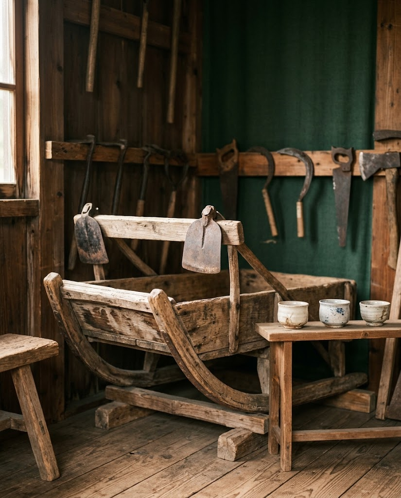
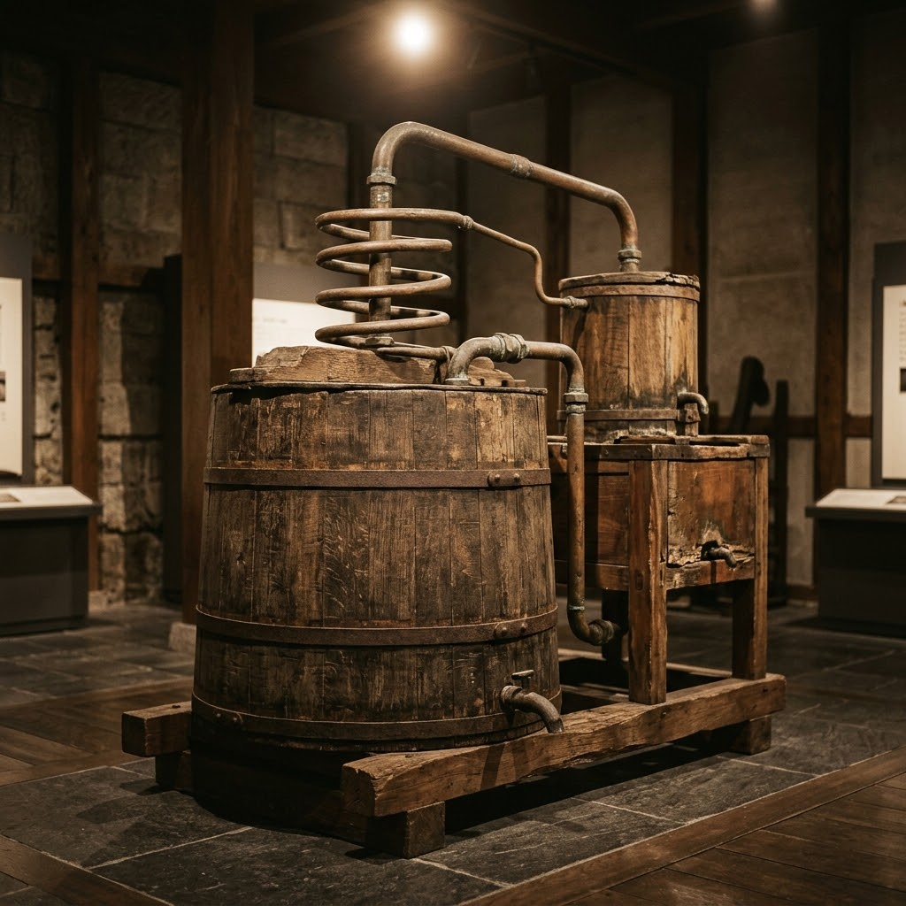

駅舎に息づく、
ふるさとの記憶
佐久ふるさと伝承館は、北海道中川町のJR佐久駅の駅舎内にある展示施設です。地元の方々から寄贈された昔の道具や資料を、駅の静かな空間に並べています。
地域の歴史や文化を保存し、後世に伝えること。その願いから生まれた小さな館には、この土地で暮らしてきた人々の営みが、ひとつひとつの品として残されています。


イチオシ
ハッカの蒸留装置
館を代表する展示は、木製のハッカ蒸留機です。使われ方を丁寧に解説したパネルが添えられ、初めて目にする方にも仕組みが伝わります。
「ふるさと遺産」と位置づけられた歴史的資料や民具、農具、発掘された土器や石器など、多彩な収蔵品を一堂に集め、次の世代へ継承しています。
- ハッカの蒸留装置
- 馬橇・農工具
- 戦時国債や旭日旗が入ったお猪口
- この地区で発掘されたアンモナイトの化石
訪れた方の声
★★★★アンモナイトの化石が置いているなど、素晴らしい施設だと思います。もっと多くの人に見学してもらいたいと思いました。
★★★★★宗谷本線佐久駅構内に多種多様に展示品が並んでいます。まず気になったのが、木製のハッカ蒸留機です。初めて見ましたが、説明等が詳しく記載されており、非常に興味深い装置でした。次に大きな物ですと馬橇や農工具などがあります。その他、戦時国債や旭日旗が入ったお猪口も数点ならんでいました。これらは地元の方々から寄贈された品々であり、なかなか面白く見応えあると思います。また、この地区で発掘されたアンモナイトの化石もあります。近隣には当時の面影が残る建物があります。無料でした。
施設案内
- 施設名
- 佐久ふるさと伝承館
- 所在地
- 北海道中川郡中川町佐久
- 定休日
- 土曜日・日曜日・祝祭日
- 電話
- 01656-7-2811
- メール
- nakagawa-soumu@town.nakagawa.hokkaido.jp
- 公式ページ
- 中川町公式ホームページ